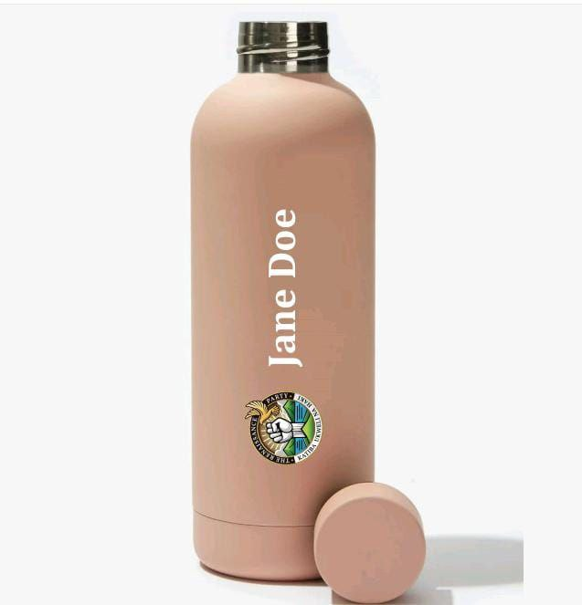

The Renaissance Party.
Building a Better Kenya
Join us in our mission to create a just, equitable, and prosperous nation for all.
Learn MoreDonate
Support our cause by making a donation. Every contribution helps us make a difference.
Blog & News
About Us
Karibu to the Renaissance Party – a bold movement born from the heart of Kenya, driven by the call for constitutional integrity, truth, and justice. We are here to champion a new dawn for our nation, where the rule of law is not just a slogan but a lived reality for every Kenyan.
At the Renaissance Party, we believe that a thriving democracy starts with a system that works for all, not just a few. We are committed to ensuring that justice is blind – no matter your status, influence, or connections, the law must apply equally. We stand firm against corruption, impunity, and the erosion of our constitutional values, because Kenya deserves leaders who serve the people, not themselves.
Message from the Party Leader
It is with a deep sense of pride and responsibility that I address you today as the leader of The Renaissance Party. Our party stands as a beacon of hope, driven by unwavering values of truth, integrity, justice, and a firm commitment to upholding our Constitution. In a time when the very soul of our nation is at a crossroads, The Renaissance Party is here to chart a new course; one that leads to a better, more just, and prosperous Kenya for all.
Our vision is rooted in the belief that a strong and vibrant nation is built upon the foundations of transparency, accountability, and inclusivity. The Renaissance Party is committed to creating a country where every Kenyan has the opportunity to thrive. We believe in empowering young people, giving them the chance to fulfill their political ambitions, and providing them with the tools they need to contribute to the leadership and growth of this great nation.
We are committed to ensuring that every Kenyan enjoys the right to quality education, access to good infrastructure, and the opportunity for meaningful employment. The future of our nation depends on how we treat our young people today. We believe that by investing in education, in skills development, and in job creation, we can unlock the full potential of our youth and position them as the leaders of tomorrow.
The time has come for us to change the direction of our country. Together, we can rid ourselves of the corrupt leaders who have prioritized personal greed and self-interest over the needs of the people. We need leaders who are not driven by selfish motives, but who are truly committed to serving the people and fulfilling their promises. Leaders who hold truth and integrity at the core of their actions. Leaders who will dedicate themselves to the work of building a better, more equitable society for all Kenyans.
The Renaissance Party stands firm in its fight against the injustices that have plagued our nation for far too long. We will take bold action against corruption, unemployment, extrajudicial killings, abductions, and the crushing burden of over-taxation. We will fight to reverse the high cost of living that continues to hurt ordinary citizens and work towards creating an economy that works for all Kenyans, not just a select few.
As we look ahead, our focus remains clear: to restore justice and integrity to our political system and create a society where all people, regardless of their background or status, can thrive. We will be vigilant in the fight for the rights of the marginalized, the downtrodden, and the voiceless. We are committed to tackling the deep-rooted challenges facing our nation, and we will not rest until we achieve the fundamental changes that Kenya so desperately needs.
Before the campaign season begins, we must come together to lay the groundwork for the work ahead. Our party will not just be a political force, but a movement; a movement of change, hope, and progress. We need to engage with the Kenyan people, understand their needs, and show them that we are not just another political party. We are a party that is ready to take on the challenges that lie ahead. We are a party that will fight for the people, with the people, every step of the way.
But none of this can be achieved without your support. We need you; your ideas, your energy, and your commitment to this cause. Whether it's through membership registration, volunteering your time, or making a donation, your involvement will be the driving force behind the real and lasting change that we are striving for. Together, we can build a movement that will transform Kenya, that will bring about the change we all deserve.
Let us stand united, shoulder to shoulder, as we move towards a brighter future. With your support, we can create a Kenya that works for everyone, where the principles of justice, equality, and opportunity are not just ideals, but the everyday reality of our citizens.
Thank you all for your continued dedication to this cause. Let’s build this movement together, and let’s show Kenya that we are ready to face the future, with hope, determination, and integrity.
Mungu mbele!
Message from the Chairperson

Welcome to the Renaissance Party – A New Dawn for the People
Fellow Citizens,
The Renaissance Party is more than a political movement; it is a revolution of ideas, a call to restore integrity, justice, and prosperity for all. Our nation has suffered under broken systems, failed leadership, and empty promises. But we refuse to accept this as our destiny.
We stand for true governance that serves the people—not the powerful. We believe in justice that protects the innocent, policies that uplift the youth, and an economy that works for everyone, not just a privileged few.
Our mission is clear:
- To dismantle corruption and restore accountability.
- To fight for judicial reforms that uphold fairness and human dignity.
- To build an economy driven by opportunity, innovation, and inclusivity.
- To empower the youth, the backbone of our nation, and ensure they have a future worth fighting for.
This is not just a party; it is a movement for all who refuse to be silenced, for those who demand change, and for those who believe in a better tomorrow. Together, we will rewrite the future and reclaim our country.
Join us. Be part of the Renaissance.
Hon. Fabisch
Chairman, Renaissance Party
Vision, Mission, and Core Values
Vision
A transformed Kenya led by honest, and visionary leaders who prioritize the common good, uphold justice, and follow the Constitution in every decision they make. The Renaissance Party envisions a future where political leaders work selflessly for the development and betterment of all Kenyans, ensuring peace, justice, and sustainable prosperity for generations to come.
Mission
To empower young people to pursue their political aspirations, support justice in governance, promote transparency, and ensure adherence to the Constitution of Kenya. We aim to develop a new generation of leaders who are focused on long-term national development, creating a prosperous and fair society for all.
Core Values
- Youth Empowerment: Providing a platform for young leaders to rise and lead the country’s transformation.
- Justice & Equity: Fighting for fairness, equality, and the protection of human rights.
- Integrity: Upholding honesty, truth, and accountability in governance.
- Constitutional Fidelity: Respecting and defending the Constitution of Kenya at all times.
- People-Centered Leadership: Placing the needs and voices of the people above political self-interest.
- Innovation & Progress: Embracing fresh ideas and solutions to drive Kenya’s social, economic, and political transformation.
Party Structures
Billy Mwangi-Party Leader

Easter Mwaniki-Deputy Party Leader
Fabisch K. Makosi - Chairperson
Gerald Wahome-Secretary General

Jonathan Mwaniki-Head Of IT

Maureen Nyaga- Youth Wing Leader

Kelvin Muriithi-Deputy Party Chief Whip
Manifesto
Our manifesto is a declaration of the values, principles, and goals that guide us as a political movement. The Renaissance Party is driven by the belief that Kenya deserves better leadership – one rooted in justice, equality, and the pursuit of prosperity for all. Below is our roadmap for achieving a better future:
Our Key Pledges:
- Youth Empowerment: Creating opportunities for young people to lead and thrive in politics, governance, and the economy.
- Justice and Integrity: Eradicating corruption and ensuring equal access to justice for all Kenyans.
- Sports and Talent Development: Investing in sports infrastructure and nurturing creative and artistic talents.
- Job Creation: Building a robust economy that generates sustainable employment opportunities.
- Civic Education: Promoting civic awareness and protecting freedom of speech.
- Healthcare: Ensuring universal access to quality healthcare services.
- Agriculture: Modernizing farming and uplifting farmers for food security and economic growth.
- Education: Providing free, accessible, and quality education for all.
- Digital Transformation: Embracing innovation and technology to drive economic growth.
- Infrastructure Development: Upgrading transport, energy, and rural infrastructure.
- Rural and Urban Transformation: Uplifting ghettos and rural communities for equitable development.
Youth Empowerment and Political Participation
Kenya’s youth are the future of our nation. However, far too often, young people are sidelined from meaningful opportunities in politics and governance. The Renaissance Party is committed to the empowerment of youth, not just in terms of job opportunities, but also in terms of encouraging active participation in political leadership.
- Youth Empowerment and Engagement: We will create avenues for young people to be actively involved in governance, encouraging them to run for political office at all levels, including in Parliament, County Assemblies, and the Executive. We believe in a youth-driven transformation of Kenya.
- Leadership Training and Mentorship: We will establish leadership programs to equip young people with the skills necessary to navigate the political system, including governance, public service, diplomacy, and conflict resolution. This will be done through mentorship programs that focus on character-building and leadership ethics.
- Creating Employment for the Youth: The Renaissance Party recognizes the challenges of youth unemployment and will focus on creating more opportunities through entrepreneurship, skill development, and job creation in key sectors like technology, agriculture, manufacturing, and the service industry.
Justice, Truth, and Integrity
The core principles of justice, truth, and integrity are non-negotiable values that will guide all actions of the Renaissance Party.
- Eradicating Corruption: We are committed to tackling corruption at all levels of government. We will create independent anti-corruption bodies with the authority to investigate and prosecute corrupt officials without interference. Public servants will be held to the highest standards of accountability.
- Justice for All: We will ensure that every Kenyan has access to justice, regardless of their financial or social status. Our justice system will be fair, transparent, and accessible. We will strengthen institutions that safeguard the rule of law and ensure equal rights for all citizens.
- Upholding the Constitution: The Constitution of Kenya is the foundation of our nation’s democracy. We are committed to upholding it in its entirety and ensuring that all government actions align with its provisions. We will continue to champion the protection of human rights and ensure that the Bill of Rights is respected.
Sports and Nurturing Talents
Kenya has an immense pool of talent, particularly in sports, but these talents often go untapped due to lack of resources and proper platforms for development. The Renaissance Party believes that investing in sports and nurturing young talent can both provide career opportunities and foster national pride.
- Investing in Sports Infrastructure: We will build and upgrade sports facilities across the country, ensuring that every region has access to modern sports venues where youth can train and compete.
- Talent Development and Scholarships: The Renaissance Party will establish sports academies across Kenya to identify and nurture young athletes. We will offer scholarships for talented youth, providing them with the opportunity to attend top local and international training programs.
- Promoting Cultural and Artistic Talents: In addition to sports, we will invest in the creative arts—such as music, theater, and visual arts by creating platforms for young people to showcase their talents. We will build cultural hubs that celebrate Kenya's diversity and creativity.
Job Opportunities and Employment Creation
Addressing unemployment, particularly among the youth, is a key priority for the Renaissance Party. We will focus on creating an economy that generates sustainable and meaningful employment opportunities for all.
- Support for Small and Medium Enterprises (SMEs): SMEs are the backbone of the Kenyan economy. We will provide support through access to finance, mentorship programs, and business development services, enabling these businesses to thrive and create jobs.
- Job Creation through Innovation and Infrastructure Development: We will create jobs by focusing on developing key sectors like agriculture, manufacturing, technology, and renewable energy. We will also build a strong infrastructure foundation to create employment opportunities, particularly in the construction and transport sectors.
- Supporting Rural Youth Employment: We will focus on providing job opportunities in rural areas, enabling young people to thrive in their local communities instead of migrating to urban centers in search of work. This will be done through agribusiness, community-based projects, and rural infrastructure development.
Civic Education and Advocating for Freedom of Speech
A well-informed citizenry is critical for a thriving democracy. The Renaissance Party will promote civic education and the protection of freedom of speech as fundamental rights of all Kenyans.
- Civic Education Campaigns: We will implement national campaigns that educate citizens on their rights, duties, and the workings of government. This will ensure that people can actively participate in democratic processes and hold their leaders accountable.
- Freedom of Expression: The Renaissance Party believes in the free exchange of ideas. We will safeguard the rights of Kenyans to express their views without fear of repression or persecution. We will ensure that the media and civil society organizations can operate freely and without interference from the government.
Good Healthcare
The health of the nation is vital to its progress. The Renaissance Party is committed to ensuring that every Kenyan has access to quality healthcare services.
- Universal Health Coverage (UHC): We will work towards providing Universal Health Coverage to ensure that all Kenyans can access affordable and high-quality healthcare, regardless of their socio-economic background.
- Healthcare Infrastructure and Access: We will improve healthcare infrastructure across the country, focusing on rural and underserved areas. This will include building more health facilities, improving existing ones, and ensuring that every Kenyan has access to essential medical services.
- Preventive Healthcare and Public Health Programs: The Renaissance Party will prioritize preventive healthcare initiatives such as vaccination, sanitation, maternal health, and mental health awareness. We will focus on promoting a healthy lifestyle and wellness for all Kenyans.
Agriculture and Uplifting Farmers
Agriculture is a crucial part of Kenya’s economy. The Renaissance Party is committed to improving the livelihoods of farmers, ensuring food security, and increasing agricultural productivity.
- Modernizing Agriculture: We will promote the use of modern agricultural techniques, tools, and technology to improve productivity. This will include access to modern irrigation systems, machinery, and pest control methods.
- Support for Farmers: We will provide financial support, training, and access to markets for farmers, particularly small-scale farmers. This will include subsidized agricultural inputs, improved access to credit, and training on sustainable farming practices.
- Expanding Agricultural Value Chains: We will support farmers in moving up the value chain by creating opportunities for them to process, package, and market their products both locally and internationally.
Education and Uplifting Students
Education is the foundation of a prosperous nation, and the Renaissance Party is dedicated to ensuring that every Kenyan child receives a quality education, regardless of their background.
- Free and Accessible Education: We will ensure that primary and secondary education remain free and accessible to all children. We will invest in schools, teacher training, and curriculum development to ensure that every student receives a quality education.
- Improving Technical and Vocational Education: We will focus on expanding technical and vocational education to provide students with practical skills for the job market. This will ensure that young people are equipped for the evolving job market.
- Tertiary Education and Scholarships: We will increase funding for scholarships, particularly for students from disadvantaged backgrounds, and ensure that universities and technical colleges provide courses that align with the needs of the job market.
Digital Transformation and Innovation
The world is moving towards a digital economy, and Kenya must embrace this transformation to remain competitive. The Renaissance Party will prioritize digital innovation and technological advancements to drive economic growth.
- Expanding Internet Access: We will expand internet infrastructure to ensure that all Kenyans, especially in rural areas, have access to affordable and reliable internet. This will open up opportunities for education, business, and government services.
- Supporting Digital Startups and Innovation: We will create an enabling environment for technology startups and entrepreneurs by providing funding, mentorship, and access to markets. This will position Kenya as a leader in innovation and digital solutions in Africa.
- Government Digitalization: We will digitize government services to increase efficiency, transparency, and accessibility. Kenyans will be able to access services online, reducing bureaucracy and improving service delivery.
Transport and Infrastructure Development
Infrastructure development is crucial for economic growth and accessibility. The Renaissance Party is committed to improving Kenya’s infrastructure, particularly in the areas of transport, roads, and energy.
- Upgrading Transport Networks: We will prioritize the construction and upgrading of roads, railways, and airports to ensure that goods and people can move efficiently across the country.
- Improving Rural Infrastructure: We will focus on improving rural infrastructure, particularly roads, to enable farmers to access markets and facilitate easier movement of goods and services in remote areas.
- Energy Development: We will focus on expanding access to affordable and renewable energy sources, including solar, wind, and hydroelectric power, to ensure that every Kenyan has access to reliable electricity.
Uplifting Ghettos and Rural Transformation
The Renaissance Party acknowledges that many Kenyans, especially in rural and informal urban areas (ghettos), face severe challenges in accessing basic services. We are committed to uplifting these areas and ensuring equitable development across the nation.
- Upgrading Informal Settlements: We will work to improve living conditions in informal settlements by providing access to clean water, sanitation, education, healthcare, and affordable housing.
- Empowering Rural Communities: We will invest in rural development programs that focus on agriculture, infrastructure, and local entrepreneurship. This will ensure that rural areas are self-sustaining and that residents can access essential services.
Conclusion
The Renaissance Party stands for a new dawn; a rebirth of hope, prosperity, and unity for Kenya. Our mission is to create a nation where every Kenyan has the opportunity to thrive, regardless of their background. Together, we will transform Kenya into a beacon of progress, innovation, and equality in Africa.
The Renaissance Party – A New Beginning for Kenya.
Upcoming Events
Stay tuned for our exciting events!
October 2023
How to Vote
Voting is a crucial part of our democracy. Here’s how you can make your voice heard:
Ensure you are registered to vote at your nearest IEBC office.
Carry your national ID or passport to the polling station.
Mark your ballot paper clearly and correctly.
Drop your ballot paper in the designated ballot box.
Volunteer
Join us in making a difference! Sign up to volunteer with The Renaissance Party and help us bring positive change to our community.
- Participate in community outreach programs
- Help organize events and rallies
- Support our campaigns and initiatives
Contact us by clicking Here to get started.
Merchandise
Branded T-Shirts
Branded Caps
Branded Bottles
Gallery
Explore our gallery to see the moments we've captured during our journey.
Contact Us
Get in touch for more information.